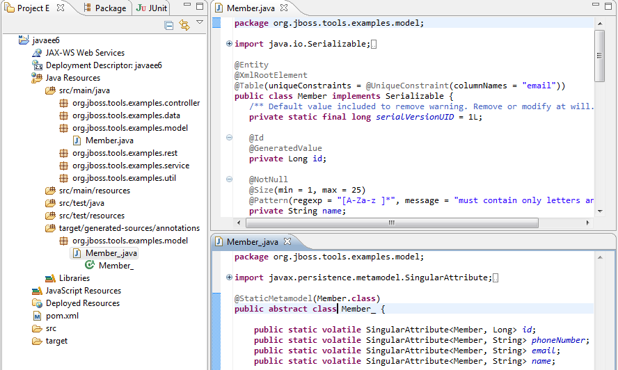
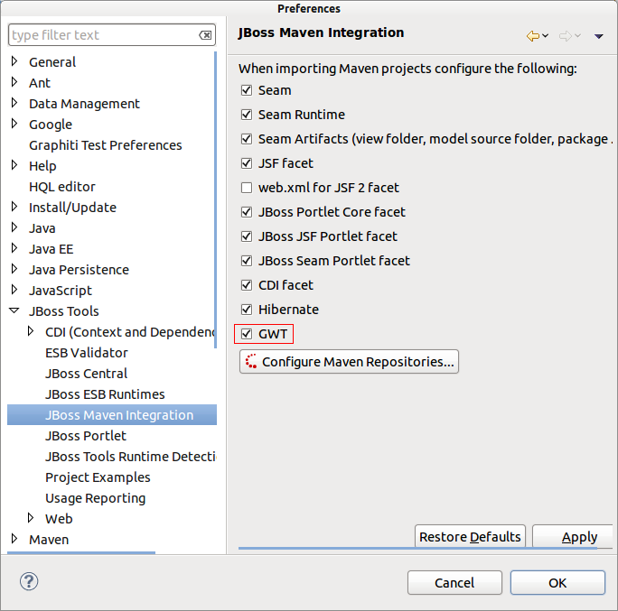
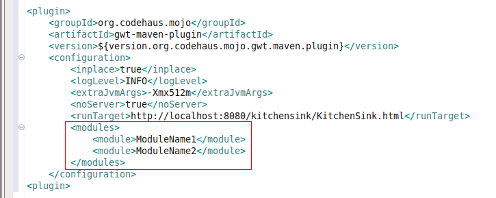

< Main Index OpenShift Tools >
JBoss Maven Integration |
|
| Annotation Processing support |
m2e-apt is a m2e plugin allowing automatic configuration of Eclipse JDT's built-in Annotation Processing Toolkit (APT) based on your maven project's pom.xml configuration.
With m2e-apt, you can now automatically enable annotation processing support for maven projects, based on their classpath dependencies (Requires Java >= 1.6). The generated source folders (target/generated-sources/annotation for maven-compiler-plugin; target/generated-sources/apt for maven-processor-plugin) are automatically added to the project classpath. 
Since Annotation Processing is managed by Eclipse JDT APT by default, a change in your source classes triggers incremental processing automatically. The downside of using JDT APT is, there's no separation between main and test classes (the way maven-processor-plugin handles them). To mitigate that limitation, you can change the workspace or project preferences to delegate annotation processing to maven, instead of JDT APT (Note this only works when using maven-processor-plugin). This will result in slower incremental builds (all classes will be processed) but will provide identical results to maven command line builds. See JBIDE-8208 for more details. |
|
|
|
| New GWT configurator |
You can enable/disable GWT Project Configurator by using follow preference: GWT Project Configurator scans configuration "gwt-maven-plugin" in pom.xml for modules and adds them to the configuration. or If there is no modules defined in pom.xml then Configurator adds all existing modules to configuration. GWT Project Configurator sets GWT Compiler output folder to the same folder which is used by Maven Compiler. You can use Maven or GWT Compiler to compile your application and Deploy to Server or Running on an External Server, it does not require additional compilation. See: |
|
|
|
| JBoss Source Lookup |
See JBoss Source Lookup for more details. Related jira. |
|
|
|
| New Hibernate 3.6.x and 4.x maven provided libraries |
When you start a project and you need to add Hibernate as your JPA provider, adding the Hibernate dependencies manually one by one can be a chore. Now if your project is Facet enabled, adding both the JBoss Maven and the JPA Facet will give you access to new JPA library providers for the Hibernate platform.
You can change the dependencies version and exclusions :
Once you finish the Facets configuration, your project will have the Hibernate dependencies added to its pom.xml See JBIDE-10911 for more details. |
|
|
|